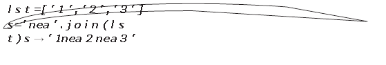
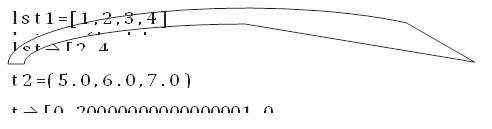
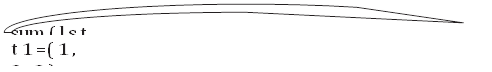
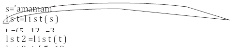

Большинство программ работает не с отдельными переменными, а с набором переменных. Например, программа может обрабатывать информацию об учащихся группы, считывая список учащихся с клавиатуры или из файла, при этом изменение количества учащихся в группе не должно требовать модификации исходного кода программы.
Раньше мы сталкивались с задачей обработки элементов последовательности, например, вычисляя наибольший элемент последовательности. Но при этом мы не сохраняли всю последовательность в памяти компьютера. Однако, во многих задачах нужно именно сохранять всю последовательность, например, если бы нам требовалось вывести все элементы последовательности в возрастающем порядке (“отсортировать последовательность”).
Для хранения таких данных можно использовать структуру данных, называемую список. Список представляет собой последовательность элементов, пронумерованных от 0, как символы в строке. Список можно задать перечислением элементов списка в квадратных скобках.
Primes = [2, 3, 5, 7, 11, 13]
Rainbow = ['Red', 'Orange', 'Yellow', 'Green', 'Blue', 'Indigo', 'Violet']
В списке Primes — 6 элементов, а именно: Primes[0]==2, Primes[1]==3, Primes[2]==5, Primes[3]==7, Primes[4]==11, Primes[5]==13. Список Rainbow состоит из 7 элементов, каждый из которых является строкой.
В отличие от строк, элементы списка можно изменять, присваивая им новые значения.
Rainbow = ['Red', 'Orange', 'Yellow', 'Green', 'Blue', 'Indigo', 'Violet']
print(Rainbow[0])
Rainbow[0] = 'красный'
print('Выведем радугу')
for i in range(len(Rainbow)):
print(Rainbow[i])
Итак, список в Python - это упорядоченный набор объектов. В список могут одновременно входить объекты разных типов (числа, строки и другие структуры, в частности, списки и кортежи). Объекты, входящие в список, называют элементами списка. Подчеркнем, любой элемент списка может содержать объект произвольного типа.
Например: arr = [ [1,2,3], [4,5,6], [7,8,9]]
Чтобы получить значение элемента во вложенном списке, следует указать два индекса: arr [1] [1] получим 5.
Элементы вложенного списка также могут иметь элементы произвольного типа. Количество вложений не ограничено, и мы можем создать объект любой степени сложности. В этом случае для доступа к элементам указывается несколько индексов подряд.
Например: arr = [ [1, [‘a’, ‘b’], 3], [4,5,6], [7,8,9]]
arr[0] [1] [0] получим ‘a’
пусть:
arr = [ [1, {‘a’ : 10, ‘b’ : [‘s’,5]}]]
arr[0] [1] [‘b’] [0] получим ‘s’
Генераторы списков
Для создания списка, заполненного одинаковыми элементами, можно использовать оператор повторения списка, например:
n = 5
a = [0] * n
Для создания списков, заполненных по более сложным формулам можно использовать генераторы: выражения, позволяющие заполнить список некоторой формулой. Общий вид генератора следующий:
[выражение for переменная in последовательность]
где переменная — идентификатор некоторой переменной, последовательность — последовательность значений, который принимает данная переменная (это может быть список, строка или объект, полученный при помощи функции range), выражение — некоторое выражение, как правило, зависящее от использованной в генераторе переменной, которым будут заполнены элементы списка.
Вот несколько примеров использования генераторов.
Создать список, состоящий из n нулей можно и при помощи генератора:
a = [0 for i in range(5)]
Создать список, заполненный квадратами целых чисел можно так:
n = 5
a = [i ** 2 for i in range(n)]
Если нужно заполнить список квадратами чисел от 1 до n, то можно изменить параметры функции range на range(1, n + 1):
n = 5
a = [i ** 2 for i in range(1, n + 1)]
Вот так можно получить список, заполненный случайными числами от 1 до 9 (используя функцию randrange из модуля random):
from random import randrange
n = 10
a = [randrange(1, 10) for i in range(n)]
А в этом примере список будет состоять из строк, считанных со стандартного ввода: сначала нужно ввести число элементов списка (это значение будет использовано в качестве аргумента функции range), потом — заданное количество строк:
a = [input() for i in range(int(input()))]
Генераторы списков могут иметь сложную структуру, например, состоять из нескольких вложенных циклов for и (или) содержать оператор ветвления if после цикла. В качестве примера получим четные элементы списка и умножим их на 10:
arr = [1,2,3,4]
arr = [i*10 for i in arr if i % 2 == 0]
print (arr)
Результат выполнения [20, 40]
Усложним пример: получим четные элементы вложенного списка и умножим их на 10.
arr = [[1,2],[3,4], [5,6]]
arr = [j*10 for i in arr for j in i if j % 2 == 0]
print (arr)
Результат выполнения [20, 40, 60]
|
Для того, чтобы создать многомерный список можно воспользоваться генератором: L = [[0] * 3 for i in range(4)] print(L) |
[[0, 0, 0], [0, 0, 0], [0, 0, 0], [0, 0, 0]]
В этой программе создается двумерный список с размерностью 4х3, заполненный нулями. Для того, чтобы вывести подобный список в компактной форме используется представление в виде матрицы – прямоугольной таблицы.
Рассмотрим еще несколько способов создания и считывания списков. Прежде всего, можно создать пустой список (не содержащий элементов, т.е. длина=0), а в конец списка можно добавлять элементы при помощи метода append. Например, пусть программа получает на вход количество элементов в списке n, а потом n элементов списка по одному в отдельной строке. Вот пример входных данных в таком формате:
a = [] # заводим пустой список
n = int(input()) # считываем количество элемент в списке
for i in range(n):
new_element = int(input()) # считываем очередной элемент
a.append(new_element) # добавляем его в список
# последние две строки можно было заменить одной:
# a.append(int(input()))
print(a)
В этом примере создается пустой список, далее считывается количество элементов в списке, затем по одному считываются элементы списка и добавляются в его конец. То же самое можно записать, сэкономив переменную n:
a = []
for i in range(int(input())):
a.append(int(input()))
print(a)
Для списков целиком определены следующие операции: конкатенация списков (сложение списков, т. е. приписывание к одному списку другого) и повторение списков (умножение списка на число). Например:
a = [1, 2, 3]
b = [4, 5]
c = a + b
d = b * 3
print([7, 8] + [9])
print([0, 1] * 3)
В результате список c будет равен [1, 2, 3, 4, 5], а список d будет равен [4, 5, 4, 5, 4, 5]. Это позволяет по-другому организовать процесс считывания списков: сначала считать размер списка и создать список из нужного числа элементов, затем организовать цикл по переменной i начиная с числа 0 и внутри цикла считывается i-й элемент списка:
a = [0] * int(input())
for i in range(len(a)):
a[i] = int(input())
Вывести элементы списка a можно одной инструкцией print(a), при этом будут выведены квадратные скобки вокруг элементов списка и запятые между элементами списка. Такой вывод неудобен, чаще требуется просто вывести все элементы списка в одну строку или по одному элементу в строке. Приведем два примера, также отличающиеся организацией цикла:
a = [1, 2, 3, 4, 5]
for i in range(len(a)):
print(a[i])
Здесь в цикле меняется индекс элемента i, затем выводится элемент списка с индексом i.
a = [1, 2, 3, 4, 5]
for elem in a:
print(elem, end=' ')
В этом примере элементы списка выводятся в одну строку, разделенные пробелом, при этом в цикле меняется не индекс элемента списка, а само значение переменной (например, в цикле for elem in ['red', 'green', 'blue'] переменная elem будет последовательно принимать значения 'red', 'green', 'blue'.
Обратите особое внимание на последний пример! Очень важная часть идеологии Python — это цикл for, который предоставляет удобный способ перебрать все элементы некоторой последовательности. В этом отличие Python от Паскаля, где вам обязательно надо перебирать именно индексы элементов, а не сами элементы.
Приведем пример, демонстрирующий использование цикла for в ситуации, когда из строки надо выбрать все цифры и сложить их в массив как числа.
# дано: s = 'ab12c59p7dq'
# надо: извлечь цифры в список digits,
# чтобы стало так:
# digits == [1, 2, 5, 9, 7]
s = 'ab12c59p7dq'
digits = []
for symbol in s:
if '1234567890'.find(symbol) != -1:
digits.append(int(symbol))
Срезы
Со списками, так же как и со строками, можно делать срезы. А именно:
A[i:j] срез из j-i элементов A[i], A[i+1], ..., A[j-1].
A[i:j:-1] срез из i-j элементов A[i], A[i-1], ..., A[j+1] (то есть меняется порядок элементов).
A[i:j:k] срез с шагом k: A[i], A[i+k], A[i+2*k],... . Если значение k<0, то элементы идут в противоположном порядке.
Каждое из чисел i или j может отсутствовать, что означает “начало строки” или “конец строки”
Списки, в отличии от строк, являются изменяемыми объектами: можно отдельному элементу списка присвоить новое значение. Но можно менять и целиком срезы. Например:
A = [1, 2, 3, 4, 5]
A[2:4] = [7, 8, 9]
Получится список, у которого вместо двух элементов среза A[2:4] вставлен новый список уже из трех элементов. Теперь список стал равен [1, 2, 7, 8, 9, 5].
A = [1, 2, 3, 4, 5, 6, 7]
A[::-2] = [10, 20, 30, 40]
Получится список [40, 2, 30, 4, 20, 6, 10]. Здесь A[::-2] — это список из элементов A[-1], A[-3], A[-5], A[-7], которым присваиваются значения 10, 20, 30, 40 соответственно.
Если не непрерывному срезу (то есть срезу с шагом k, отличному от 1), присвоить новое значение, то количество элементов в старом и новом срезе обязательно должно совпадать, в противном случае произойдет ошибка ValueError.
Обратите внимание, A[i] — это элемент списка, а не срез!
Со списками можно легко делать много разных операций, например:
|
x in A |
Проверить, содержится ли элемент в списке. Возвращает True или False |
|
x not in A |
То же самое, что not(x in A) |
Самый наглядный способ создания списка - перечислить его элементы в квадратных скобках через запятую, например:
lst =[ 12 , ’ b ’ , 3 4 . 6 , ’ d e r e v o ’ ]
В именах списков удобно использовать сочетание lst (от слова list, т.е. «список»).
С использованием допустимой в Python цепочки присваиваний можно элементам списка сразу сопоставить какие-нибудь переменные:
lst =[ x , s1 , y , s 2 ] =[ 12 , ’ b ’ , 3 4 . 6 , ’ d e r e v o ’ ]
В этом случае элемент списка и соответствующая переменная будут указывать на одни и те же значения, т.е. значение lst[0] будет равно значению x, а lst[3] . соответственно, s2.
Однако эти переменные могут изменяться независимо от элементов списка. Присвоение нового значения переменной s1 никак не влияет на элемент lst[1]. В отличие от кортежа, значения элементов списка можно изменять, добавлять элементы в список и удалять их.
Список может быть пустым (создать его можно так:
lst =[]), а может содержать только один элемент (например, lst =[’domik’]).
Таблица 1 - Основные операции со списками
|
Функция или операция |
Описание и результат |
|
len( lst ) |
Определяется количество элементов списка lst. Результат число. |
|
lst1 + lst2 |
Объединение списков. Получается новый список, в котором после элементов списка lst1 находятся элементы списка lst2 . Пример: lst1 =[1,2,3] lst2 =[’raz’, ’dva’] lst3 =lst1+lst2 lst3 → [1, 2, 3, ’ raz ’ , ’dva’] |
|
lst ∗ n (или n∗ lst) |
n-кратное повторение списка lst . Результат новый список. Пример: lst2 =[’raz ’ , ’dva’] lst2 ∗3 → [’raz’,’dva’, ’raz’,’dva’, ’raz’, ’dva’] |
|
lst [ i ] |
Выбор из lst элемента с номером i, нумерация начинается с 0 (первый элемент имеет номер 0) Если i < 0, отсчёт идёт с конца (последний элемент списка имеет номер −1). Пример: lst3 = [1, 2, 3, ’ raz ’ , ’dva’] lst3 [2] → 3 lst3 [−2] → ’raz’ |
|
lst [i : j :k] |
Срез список, содержащий элементы списка lst с номерами от i до j с шагом k (элемент с номером i входит в итоговый список, а элемент с номером j уже не входит). Если k не указан (использован вариант lst [ i : j ]), то символы идут подряд (равносильно lst [ i : j :1] ). Пример: lst3 = [1, 2, 3, ’ raz ’ , ’dva’] lst3 [1:4] → [2, 3, ’raz’ ] |
|
min( lst ) |
Определяется элемент с наименьшим значением в соответствии с алфавитным (словарным) порядком. Пример: lst3 = [1, 2, 3, ’ raz ’ , ’dva’] min(lst3 ) → 1 |
|
max( lst ) |
Определяется элемент с наибольшим значением в соответствии с алфавитным (словарным) порядком. Пример: lst3 = [1, 2, 3, ’ raz ’ , ’dva’] max(lst3) → ’raz’ |
|
Продолжение таблицы 1 |
|
|
Функция или операция |
Описание и результат |
|
lst [ i ]=x |
Замена элемента списка с номером i на значение x. Если x является списком, то на место элемента списка будет вставлен список. При этом новый список не создаётся. Примеры: lst3 =[1, 2, 3, ’ raz ’ , ’dva’] lst3 [2]=’ tri ’ lst3 → [1, 2, ’ tri ’ , ’ raz ’ , ’dva’] lst3 [2]=[7,8] lst3 → [1, 2, [7, 8], ’ raz ’ , ’dva’] |
|
del lst [ i ] |
Удаление из списка элемента с номером i. Новый список не создаётся. Пример: lst3 =[1, 2, [7, 8], ’ raz ’ , ’dva’] del lst3 [2] lst3 → [1, 2, ’raz’ , ’dva’] |
|
lst [i : j]=x |
Замена среза списка lst на элемент или список x (несколько элементов заменяются на x). Примеры: lst3 =[1, 2, 3, ’ raz ’ , ’dva’] lst3 [2:4]=’ tri ’ lst3 → [1, 2, ’t’ , ’ r ’ , ’ i ’ , ’dva’] lst3 [2:4]=’a’ lst3 → [1, 2, ’a’, ’ i ’ , ’dva’] Обратите внимание, что строка интерпретируется как список! |
|
del lst [i : j] |
Удаление элементов, входящих в указанный срез (вырезание среза). Пример: lst3 =[1, 2, ’a’ , ’ i ’ , ’dva’] del lst3 [2:4] lst → [1, 2, ’dva’] |
Важно понимать, что при определении значений минимального и максимального элементов списка также используется словарный порядок: сначала идут числа по возрастанию, затем строки, начинающиеся на цифры в порядке их возрастания, затем строки, начинающиеся на прописные буквы в алфавитном порядке, а затем строки, начинающиеся на строчные буквы также в алфавитном порядке.
Списки в Python, как и строки, являются объектами, поэтому для списков существуют методы.
Таблица 2 - Основные методы списков
|
Метод |
Описание и результат |
|
lst .append(x) |
Добавление элемента x в конец списка lst. Причем x не может быть списком. Создания нового списка не происходит. Пример: lst=[’raz’,’dva’,’tri’,1,2] lst.append(3) lst → [’raz’,’dva’,’tri’,1,2,3] |
|
lst .extend(t) |
Добавление кортежа или списка t в конец списка lst (похоже на объединение списков, но создания нового списка не происходит). Пример: lst1=[1,2,3] lst2=[’raz’,’dva’] lst1.extend(lst2) lst1 → [1,2,3,’raz’,’dva’] |
|
lst .count(x) |
Определение количества элементов, равных x, в списке lst. Результат является числом. Пример: lst=[1,2,3,’raz’,’dva’,’raz’,’dva’] lst . count(’ raz ’) → 2 |
|
lst . index(x) |
Определение первой слева позиции элемента x в списке lst. Если такого элемента нет, возникает сообщение об ошибке. Пример: lst=[1,2,3,’raz’,’dva’,’raz’,’dva’] lst . index(’dva’) → 4 |
|
lst .remove(x) |
Удаление элемента x в списке lst в первой слева позиции. Если такого элемента нет, возникает сообщение об ошибке. Пример: lst=[1,2,3,’raz’,’dva’,’raz’,’dva’] lst.remove(’dva’) lst → [1,2,3,’raz’,’raz’,’dva’] |
|
lst .pop(i) |
Удаление элемента с номером i из списка lst. При этом выдаётся значение этого элемента (извлечение элемента из списка). Если номер не указан, удаляется последний элемент. Новый список не создаётся. Примеры: lst=[1,2,3,’raz’,’raz’,’dva’] \lstinline lst.pop(3)| → ’raz’| lst → [1,2,3,’raz’,’dva’] \ lstinline lst.pop()| → ’dva’| lst → [1,2,3,’raz’] |
|
lst.insert(i ,x) |
Вставка элемента или списка x в позицию i списка lst. Если i>=0, вставка идёт в начало списка. Если i>len( lst ), вставка идёт в конец списка. Новый список не создаётся. Пример: lst= [1,2,3,’raz’] lst.insert(3,’tri’) lst → [1,2,3,’tri’,’raz’] |
|
lst . sort () |
Сортировка списка по возрастанию (в алфавитном порядке). Новый список не создаётся. Пример: lst=[1,2,3,’tri’,’raz’] lst.sort() lst → [1,2,3,’raz’,’tri’] |
|
Продолжение таблицы 2 |
|
|
Метод |
Описание и результат |
|
lst . reverse () |
Замена порядка следования элементов на обратный. Новый список не создаётся. Пример: lst=[1,2,3,’raz’,’tri’] lst.reverse() lst → [’tri’,’raz’,3,2,1] |
Методы split и join
Также для взаимного преобразования строк и списков используются методы строк split () и join (). Метод split () делит строку по заданному символу - разделителю и создаёт список из фрагментов строки.
Пример:
s = ‘mama myla ramu’ # символ разделитель пробел
lst → [‘mama myla ramu’]
Метод join () формирует строку из элементов списка, поставив между ними заданную строку (соединяет элементы списка с помощью заданной строки).
Пример:
|  |
Элементы списка могут вводиться по одному в строке, в этом случае строку целиком можно считать функцией input(). После этого можно использовать метод строки split(), возвращающий список строк, которые получатся, если исходную строку разрезать на части по пробелам. Пример:
# на вход подаётся строка
# 1 2 3
s = input() # s == '1 2 3'
a = s.split() # a == ['1', '2', '3']
Если при запуске этой программы ввести строку 1 2 3, то список a будет равен ['1', '2', '3']. Обратите внимание, что список будет состоять из строк, а не из чисел. Если хочется получить список именно из чисел, то можно затем элементы списка по одному преобразовать в числа:
a = input().split()
for i in range(len(a)):
a[i] = int(a[i])
С помощью генераторов то же самое можно сделать в одну строку:
a = [int(s) for s in input().split()]
Если нужно считать список действительных чисел, то нужно заменить тип int на тип float.
У метода split() есть необязательный параметр, который определяет, какая строка будет использоваться в качестве разделителя между элементами списка. Например, вызов метода split('.') вернет список, полученный разрезанием исходной строки по символам '.':
a = '192.168.0.1'.split('.')
В Python можно вывести список строк при помощи однострочной команды. Для этого используется метод строки join. У этого метода один параметр: список строк. В результате возвращается строка, полученная соединением элементов переданного списка в одну строку, при этом между элементами списка вставляется разделитель, равный той строке, к которой применяется метод. Примеры:
a = ['red', 'green', 'blue']
print(' '.join(a))
# вернёт red green blue
print(''.join(a))
# вернёт redgreenblue
print('***'.join(a))
# вернёт red***green***blue
Функция range() создаёт список как числовую арифметическую прогрессию.
Полный вариант её использования:
range ( x0 , x1 , d )
При этом создаётся список из чисел в полуоткрытом интервале [x0, x1) с шагом d, например,
Минимальный вариант range ( n ) создаёт список чисел от 0 до n-1 с шагом 1.
Промежуточный вариант range ( k , n ) создаёт список чисел от k до n-1 с шагом 1.
Для списков, созданных с помощью функции range(), часто используются проверки принадлежности величины х списку range() (условие x in range(a,b,d)) или непринадлежности (условие x not in range(a,b,d)). Такие условия встречаются при организации циклов с переменной.
Применение функции sum() для списков, полученных с помощью range(), даёт сумму прогрессии.
Примеры:
sum ( range ( 10 ) ) → 45
sum ( range ( 0 , 1 5 , 3 ) ) → 30
ЗАДАЧА 1. В списке чисел проверить, все ли элементы являются уникальными, т. е. каждое число встречается только один раз.
РЕШЕНИЕ:
Указание: Классический вариант решения данной задачи - брать по очереди элементы списка и сравнить каждый со стоящими за ним. При первом же совпадении элементов делается вывод, что в списке есть одинаковы элементы и работа программы завершается.
Еще одним способом решения может быть использование типа данных "множества" (set). Как известно, в множествах не может быть одинаковых элементов. При преобразовании списка во множество в нем одинаковые элементы будут представлены единожды, то есть дубли удалятся. Если после этого сравнить длину исходного списка и множества, то станет ясно, есть ли в списке одинаковые элементы. Если длины совпадают, значит все элементы списка уникальны. Если нет, значит, были одинаковые элементы.
Допустим, исходный список генерируется таким кодом:
from random import random
N = 10
arr = [0] * N
for i in range(N):
arr[i] = int (random() * 50)
print(arr)
Пример решения классическим способом:
for i in range(N-1):
for j in range (i+1, N):
if arr[i] == arr[j]:
print("Есть одинаковые")
quit()
print("Все элементы уникальны")
Здесь j принимает значения от следующего элемента за тем, для которого ищется совпадение, до последнего в списке. Сравнивать элемент с индексом i с элементами, стоящими впереди него, не надо, т. к. эти сравнения уже выполнялись на предыдущих итерациях внешнего цикла.
Решение задачи с помощью множества:
setarr = set(arr)
if len(arr) == len(setarr):
print("Все элементы уникальны")
else:
print("Есть одинаковые")
Функция set() преобразует список во множество.
Примеры выполнения кода:
[2, 4, 1, 2, 45, 38, 26, 11, 49, 25]
Есть одинаковые
[44, 49, 21, 19, 23, 27, 34, 9, 41, 31]
Все элементы уникальны
ЗАДАЧА 2. Написать программу, выполняющую удаление из списка чисел элементов, значения которых больше 35 и меньше 65. При этом удаляемые числа сохранить в другом списке.
РЕШЕНИЕ: В Python с помощью инструкции del можно удалить элемент списка, указав сам список и индекс удаляемого элемента.
Алгоритм решения задачи выглядит простым. Достаточно перебрать элементы списка и удалить те, которые удовлетворяют условию. Однако при удалении элемента на его место становится следующий, но поскольку мы переходим к следующему элементу, то пропускаем проверку того, что стал на место удаленного. Цикл for использовать нельзя, т. к. меняется количество элементов списка.
Можно использовать цикл while, измеряя на каждой его итерации длину списка, индекс же увеличивать только в том случае, если удаления элемента не произошло.
import random
a = []
for i in range(10):
n = round(random.random() * 100)
a.append(n)
print("A =", a)
b = []
i = 0
while i < len(a):
if 35 < a[i] < 65:
b.append(a[i])
del a[i]
else:
i += 1
print("A =", a)
print("B =", b)
Примеры выполнения программы:
A = [66, 57, 72, 65, 37, 67, 23, 16, 30, 72]
A = [66, 72, 65, 67, 23, 16, 30, 72]
B = [57, 37]
A = [1, 65, 85, 62, 2, 1, 52, 63, 36, 94]
A = [1, 65, 85, 2, 1, 94]
B = [62, 52, 63, 36]
ЗАДАЧА 3. Умножить каждый элемент списка на 2.
РЕШЕНИЕ:
arr = [1, 2, 3]
for i in arr:
i = i*2
print(arr)
Получим следующий результат:
[1, 2, 3]
Список не изменился! Переменная i на каждой итерации цикла содержит лишь копию значения текущего элемента списка. Поэтому изменить таким образом элементы списка нельзя. Чтобы получить доступ к каждому элементу списка, можно воспользоваться функцией range([<начало>, ] <конец>[, <шаг>])
Если параметр <начало> не указан, то по умолчанию берется значение 0. Параметр <конец> задает конечное значение и не входит в возвращаемые значения. Параметр <шаг> по умолчанию равен 1. Функция возвращает диапазон – особый объект, поддерживающий итерационный протокол. С помощью диапазона внутри цикла for можно получить значение текущего элемента. Еще раз попробуем решить эту задачу с помощью диапазона.
arr = [1, 2, 3]
for i in range (len(arr)):
arr[i] *= 2
print(arr)
Получим следующий результат:
[2, 4, 6]
С помощью функции len() мы получили количество элементов списка. Функция range() вернула значения от 0 до len(arr)-1. на каждой итерации цикла через переменную i доступен текущий элемент из диапазона индексов.
ЗАДАЧА 4. Даны два списка, необходимо найти их совпадающие элементы, то есть область пересечения списков - элементы, которые присутствуют в обоих списках.
РЕШЕНИЕ: Это можно сделать с помощью цикла for языка программирования Python. Код ниже подходит для списков, содержащих неповторяющиеся значения в самих себе. Иначе в результирующем списке могут появиться одинаковые элементы.
a = [5, [1, 2], 2, 'r', 4, 'ee']
a = [5, [1, 2], 2, 'r', 4, 'ee']
b = [4, 'we', 'ee', 3, [1, 2]]
c = []
for i in a:
for j in b:
if i == j:
c.append(i)
break
print(c)
Берется первый элемент первого списка (внешний цикл for) и последовательно сравнивается с каждым элементом второго списка (вложенный цикл for). В случае совпадения значений элемент добавляется в третий список c. Команда break служит для выхода из внутреннего цикла, так как в случае совпадения дальнейший поиск при данном значении i бессмыслен.
Если в самом списке могут встречаться одинаковые элементы, чтобы они не повторялись в результирующем списке, следует добавить проверку наличия такого элемента в третьем списке:
a = [5, [1, 2], 2, 'r', 4, 'ee', 'ee']
b = [4, 'we', 'ee', 3, [1, 2]]
c = []
for i in a:
if i in c:
continue
for j in b:
if i == j:
c.append(i)
break
print(c)
Результат выполнения программы:
[[1, 2], 4, 'ee']
Обработка и вывод вложенных списков (многомерные списки)
Для работы с многомерным списком необходимо использовать несколько индексов (для двумерного их будет 2). Список с одним индексом называют одномерным, с двумя — двумерным и т. д. Одномерный список нестрого соответствует вектору в математике, двумерный — матрице. Чаще всего применяются списки с одним или двумя индексами, реже — с тремя, ещё большее количество индексов встречается крайне редко. Часто в задачах приходится хранить прямоугольные таблицы с данными. Такие таблицы называются матрицами или двумерными массивами.
В языке программирования Python таблицу можно представить в виде списка строк, каждый элемент которого является в свою очередь списком, например, чисел
Создать числовую таблицу из двух строк и трех столбцов можно так:
A = [ [1, 2, 3], [4, 5, 6] ]
Здесь первая строка списка A[0 ] является списком из чисел [1, 2, 3]. То есть
A[0][0] == 1, A[0][1] == 2, A[0][2] == 3
A[1][0] == 4, A[1][1] == 5, A[1][2] == 6
Для обработки и вывода списка как правило используется два вложенных цикла. Первый цикл по номеру строки, второй цикл по элементам внутри строки. Например, вывести двумерный числовой список на экран построчно, разделяя числа пробелами внутри одной строки, можно так:
for i in range(len(A)):
for j in range(len(A[i]):
print(A[i][j], end = ' ')
print()
То же самое, но циклы не по индексу, а по значениям списка:
for row in A:
for elem in row:
print(elem, end = ' ')
print()
Естественно для вывода одной строки можно воспользоваться методом join:
for row in A:
print(' '.join(map(str, row)))
Используем два вложенных цикла для подсчета суммы всех чисел в списке:
S = 0
for i in range(len(A)):
for j in range(len(A[i])):
S += A[i][j]
Или то же самое с циклом не по индексу, а по значениям строк:
S = 0
for row in A:
for elem in row:
S += elem
Создание двумерного списка
Пусть даны два числа: количество строк n и
количество столбцов m. Необходимо создать список размером n×m, заполненный
нулями.
Очевидное решение оказывается неверным:
A = [[0] * m] * n
В этом легко убедиться, если присвоить элементу A[0][0] значение 1, а потом вывести значение другого элемента A[1][0] — оно тоже будет равно 1! Дело в том, что [0] * m возвращает ccылку на список из m нулей. Но последующее повторение этого элемента создает список из n элементов, которые являются ссылкой на один и тот же список (точно так же, как выполнение операции B = A для списков не создает новый список), поэтому все строки результирующего списка на самом деле являются одной и той же строкой.
Таким образом, двумерный список нельзя
создавать при помощи операции повторения одной строки. Что же делать?
Первый способ: сначала создадим список из n элементов (для начала просто из n
нулей). Затем сделаем каждый элемент списка ссылкой на другой одномерный список
из m элементов:
A = [0] * n
for i in range(n):
A[i] = [0] * m
Другой (но похожий) способ: создать пустой список, потом n раз добавить в него новый элемент, являющийся списком-строкой:
A = []
for i in range(n):
A.append([0] * m)
Но еще проще воспользоваться генератором: создать список из n элементов, каждый из которых будет списком, состоящих из m нулей:
A = [[0] * m for i in range(n)]
В этом случае каждый элемент создается независимо от остальных (заново конструируется список [0] * m для заполнения очередного элемента списка), а не копируются ссылки на один и тот же список.
Ввод двумерного списка
Пусть программа получает на вход двумерный массив, в виде n строк, каждая из которых содержит m чисел, разделенных пробелами. Как их считать? Например, так:
A = []
for i in range(n):
A.append(list(map(int, input().split())))
Или, без использования сложных вложенных вызовов функций:
A = []
for i in range(n):
row = input().split()
for i in range(len(row)):
row[i] = int(row[i])
A.append(row)
Можно сделать то же самое и при помощи генератора:
A = [list(map(int, input().split())) for i in range(n)]
Сложный пример обработки двумерной таблицы
ЗАДАЧА 5. Пусть дан квадратный массив из n строк и n столбцов. Необходимо элементам, находящимся на главной диагонали, проходящей из левого верхнего угла в правый нижний (то есть тем элементам A[i][j], для которых ij) присвоить значение 1, элементам, находящимся выше главной диагонали – значение 0, элементам, находящимся ниже главной диагонали – значение 2. То есть получить такой массив (пример для n4):
1 0 0 0
2 1 0 0
2 2 1 0
2 2 2 1
РЕШЕНИЕ: Рассмотрим несколько способов решения этой задачи. Элементы, которые лежат выше главной диагонали – это элементы A[i][j], для которых i<j, а для элементов ниже главной диагонали i>j. Таким образом, мы можем сравнивать значения i и j и по ним определять значение A[i][j]. Получаем следующий алгоритм:
for i in range(n):
for j in range(n):
if i < j:
A[i][j] = 0
elif i > j:
A[i][j] = 2
else:
A[i][j] = 1
Данный алгоритм плох, поскольку выполняет одну или две инструкции if для обработки каждого элемента. Если мы усложним алгоритм, то мы сможем обойтись вообще без условных инструкций.
Сначала заполним главную диагональ, для чего нам понадобится один цикл:
for i in range(n):
A[i][i] = 1
Затем заполним значением 0 все элементы выше главной диагонали, для чего нам понадобится в каждой из строк с номером i присвоить значение элементам A[i][j] для j=i+1, …, n-1. Здесь нам понадобятся вложенные циклы:
for i in range(n):
for j in range(i + 1, n):
A[i][j] = 0
Аналогично присваиваем значение 2 элементам A[i][j] для j=0, …, i-1:
for i in range(n):
for j in range(0, i):
A[i][j] = 2
Можно также внешние циклы объединить в один и получить еще одно, более компактное решение:
for i in range(n):
for j in range(0, i):
A[i][j] = 2
A[i][i] = 1
for j in range(i + 1, n):
A[i][j] = 0
А вот такое решение использует операцию повторения списков для построения очередной строки списка. i-я строка списка состоит из i чисел 2, затем идет одно число 1, затем идет n-i-1 число 0:
for i in range(n):
A[i] = [2] * i + [1] + [0] * (n - i - 1)
А можно заменить цикл на генератор:
A = [[2] * i + [1] + [0] * (n - i - 1) for i in range(n)]
Систематизируем информацию о матрицах:
Математическая матрица имеет вид:
L00 L01 L02 L03 L04 L05 ... L0j
L10 L11 L12 L13 L14 L15 ... L1j
L20 L21 L22 L23 L24 L25 ... L2j
L30 L31 L32 L33 L34 L35 ... L3j
L40 L41 L42 L43 L44 L45 ... L4j
L50 L51 L52 L53 L54 L55 ... L5j
... ... ... ... ... ... ...
Li0 Li1 Li2 Li3 Li4 Li5 ... Lij
1) Матрица, в которой число строк равно числу столбцов называется квадратной матрицей
2) Для обращения к элементу матрицы, необходимо использовать два индекса обозначающие номер строки и номер столбца. Например L[4][5]. В данном случае элемент списка L находится в пятой строке и шестом столбце.
3) Чтобы вывести матрицу используется структура вложенных циклов for и переменные с именами: i – для пересчета строк (вложенных списков) и j – для пересчета столбцов (элементов вложенных списков).
4) Если номер строки элемента совпадает с номером столбца (i = j), это означает, что элемент лежит на главной диагонали матрицы.
5) Если элемент лежит на побочной диагонали, то индексы связаны с числом элементов в строке или столбце (n) следующим равенством: i + j = n - 1.
6) Элементы находящиеся выше главной диагонали подчиняются правилу: i < j, а ниже i > j
7) Элементы находящиеся выше побочной диагонали подчиняются правилу i + j < n, а находящиеся ниже i + j => n
Двумерный список можно инициализировать явно.
ЗАДАЧА 6. Создать массив 3х3 и вывести его элементы в виде матрицы. Для вывода использовать разновидность цикла for с перебором самих элементов.
РЕШЕНИЕ:
|
L = [[2,3,4],[4,3,7],[8,3,5]] for row in L: for item in row: print(item, "", end="") print() |
2 3 4
4 3 7
8 3 5
ЗАДАЧА 7. Заполнить двумерный массив размера 7х7 случайными числами и вывести его элементы.
РЕШЕНИЕ: В программе сначала генератором создаётся список содержащий 7 пустых списков. Во вложенном цикле с помощью метода append() эти списки будут заполнены равным количеством элементов (7).
|
from random import randint L = [[] * 7 for i in range(7)] for i in range(7): for j in range(7): L[i].append(randint(10,99)) print("{:<3d}".format(L[i][j]), end="") print() |
89 52 93 10 88 93 53
37 73 18 39 76 13 57
72 76 95 21 57 36 70
26 81 59 79 60 48 61
74 46 19 40 40 54 51
76 43 79 67 99 34 35
62 55 50 73 75 95 28
Данная задача может быть решена более компактно, если использовать вложенные генераторы.
|
L = [[randint(10,99) for j in range(7)] for i in range(7)] for i in range(7): for j in range(7): print("{:3d}".format(L[i][j]), end="") print() |
Функции zip () и map().
Кроме перечисленных в ЛР№6 операций и методов, списки могут обрабатываться совместно (по номерам соответствующих элементов). Для этого в Python используются функции zip () и map().
Функция zip() позволяет получить из элементов различных списков список кортежей, состоящих из соответствующих элементов списков. Аргументами функции zip() являются два или более списков, а результатом список кортежей, составленных из элементов исходных списков с одинаковыми номерами (первый кортеж составляется из элементов с номером 0, второй из элементов с номером 1 и т.д.)
Пример:
l s t 1 =[ 1 , 2 , 3 , 4 ]
l s t 2 =[ ’ t r i ’ , ’ dva ’ , ’ r a z ’ ] l s t=z i p ( l s t 1 , l s t 2 )
l s t → [ ( 1 , ’ t r i ’ ) , ( 2 , ’ dva ’ ) , ( 3 , ’ r a z ’ ) ]
Количество элементов в итоговом списке равно количеству элементов в самом коротком исходном списке. Лишние элементы других списков игнорируются.
Функцию zip () можно применять и к кортежам, а также смешивать в её аргументах списки и кортежи.
Функция map() используется для применения одной и той же операции к элементам одного или нескольких списков или кортежей. Если списков (кортежей) несколько, они должны быть одинаковой длины (иметь одинаковое количество элементов). При использовании map() чаще всего применяются так называемые lambda-функции, т.е. безымянные функции, действующие только на время конкретной операции map().
Синтаксис лямбды: lambda [параметры] : выражение
На использование лямбды накладываются определенные ограничения (помимо того, что такая функция может быть вызвана только в определенном месте программы). В теле такой функции нельзя использовать операцию “=”, инструкции if, while, try и for, а также return и yield, но можно использовать логическое выражение (тернарную операцию).
При создании lambda-функции указывается ключевое слово lambda, затем пишутся переменные, для которых эта функция определяется и операции с этими переменными (что функция делает с переменными).
После описания lambda-функции, которая является первым аргументом функции map() пишутся остальные аргументы имена списков (кортежей), с которыми надо выполнить операцию.
Примеры:
В случае, если в функции map() в качестве первого аргумента используется специальная функция None, результат равносилен использованию функции zip (). Другими словами, map(None, lst1, lst2 ) равносильно zip( lst1 , lst2 ).
Для списков и кортежей, состоящих только из чисел, возможно применение функции sum(), которая вычисляет сумму элементов списка (кортежа).
Примеры:
|  |
Для преобразования строки или кортежа в список используется функция
list ().
Примеры:
|  |
Соответственно, с помощью функции tuple () список может быть преобразован в кортеж.
Помимо метода списка list.sort() существует встроенная функция sorted(). Синтаксис этих функций:
sorted(iterable, key=None, reverse=False)
list.sort(key=None, reverse=False)
sorted() отличается от метода списка тем, что принимает в качестве аргумента коллекцию, а возвращает копию отсортированного массива, в то время как sort() сортирует взятый список на месте, в памяти. sort() определен только как метод списков, sorted() можно использовать для любой коллекции. Обе функции имеют необязательный аргумент key – ключ сортировки. Значением ключевого параметра должна быть функция, которая принимает один аргумент и возвращает ключ, используемый для сортировки целевого массива.
ЗАДАЧА 8. Упорядочить список строк по длине, регистру и
лексикографически, соответственно.
РЕШЕНИЕ:
|
L = ['a', 'aa', 'aaa', 'A', 'AA', 'AAA', 'b', 'dd', 'ZZZ', 'ZZ', 'Z'] L.sort(key=len) print(L) L.sort(key=str.lower) print(L) L.sort(key=max) print(L) |
['a', 'A', 'b', 'Z', 'aa', 'AA', 'dd', 'ZZ', 'aaa', 'AAA', 'ZZZ']
['a', 'A', 'aa', 'AA', 'aaa', 'AAA', 'b', 'dd', 'Z', 'ZZ', 'ZZZ']
['A', 'AA', 'AAA', 'Z', 'ZZ', 'ZZZ', 'a', 'aa', 'aaa', 'b', 'dd']
По умолчанию сортировка выполняется по возрастанию, аргумент reverse со значением True изменит направление на обратное.
В качестве значения аргумента key в функциях сортировки часто используется лямбда-выражение (или просто “лямбда”). Лямбда представляет собой анонимную функцию, т. е. функцию без имени, поэтому лямбда должна использоваться там, где она определяется.
Разработаем программу в которой одна и та же операция над элементами списка производится с помощью обычной функции и с помощью лямбды.
ЗАДАЧА 9.
|
from random import randint, seed seed() def sum(x): return x + 2 L = [randint(10, 99) for i in range(10)] A = list(L) print(L) L = [sum(i) for i in L] print(L) A = list(map(lambda x: x + 2, A)) print(A) |
[26, 14, 77, 10, 87, 41, 75, 16, 78, 48]
[28, 16, 79, 12, 89, 43, 77, 18, 80, 50]
[28, 16, 79, 12, 89, 43, 77, 18, 80, 50]
Для изменения списка А в программе использовалась встроенная функция map(), которая применяет функцию ко всем элементам списка, поэтому код с лямбдой будет значительно короче. Эта функция может работать с несколькими списками одинаковой длины.
Применим лямбду как key-значение в функциях сортировки. Приведем пример такой задачи.
ЗАДАЧА 10. Дан неотсортированный список строк некоторых идентификаторов в формате год.месяц.день.час.минуты. Необходимо выполнить сортировку массива по значению дня, по убыванию.
|
РЕШЕНИЕ: L = ['2018.11.05.18.4', '2018.02.12.05.12', '2018.12.10.14.33', '2018.03.20.15.15', '2018.06.12.12.10', '2018.06.12.45.50', '2018.01.01.01.01', '2018.05.14.17.00'] L.sort(key=lambda x: int(x.split('.')[2]), reverse=True) for j in L: print(j, sep='\n') |
2018.03.20.15.15
2018.05.14.17.00
2018.02.12.05.12
2018.06.12.12.10
2018.06.12.45.50
2018.12.10.14.33
2018.11.05.18.4
2018.01.01.01.01
Выражение x.split('.')[2] означает, что мы берем элемент списка (строку) и разбиваем её на элементы по символу разделителю с помощью функции split(). Как известно, эта функция возвращает список. В этом списке нам нужен 2-ой элемент (третье число слева), который мы берем операцией взятия по индексу. Наконец, функция преобразования int вернет нам целое число, которое и берется за основу для сортировки строк списка.
Несложно заметить, что лямбды могут сделать код программы по работе с элементами массива очень лаконичными. Приведем ещё один пример задачи.
ЗАДАЧА 11. Дан массив. Каждый элемент массива с четным значением увеличить в два раза, а нечетные элементы обнулить.
РЕШЕНИЕ:
|
from random import randint, seed seed() L = [randint(10, 99) for i in range(20)] print(L) L = list(map(lambda x : 0 if x % 2 else x * 2, L)) print(L) |
[19, 25, 39, 80, 81, 97, 94, 95, 99, 84, 92, 44, 43, 70, 34, 54, 93, 98, 72, 59]
[0, 0, 0, 160, 0, 0, 188, 0, 0, 168, 184, 88, 0, 140, 68, 108, 0, 196, 144, 0]
С лямбдами используются полезные функции при работе с массивами, такие как filter() и reduce(). Они подобны функции map, тоже принимают в качестве одного из аргументов другую функцию.
Назначение filter() – фильтровать значения последовательности. В результате мы получаем новый список в котором имеются только те значения, для которых функция возвращает значение True.
Функция reduce() из модуля functools организует цепочечные вычисления в списке. Приведем пример программы, в которой используются эти функции.
ЗАДАЧА 12. Дан массив получить новый массив в который войдут элементы кратные 3, но не кратные 5 из исходного массива. Получить произведение элементов созданного массива.
РЕШЕНИЕ:
|
from random import randint, seed from functools import reduce seed() A = [randint(10, 99) for i in range(15)] print('A =', A, '\n') B = list(filter(lambda x: not x % 3 and x % 5, A)) print('B =', B, '\n') p = reduce(lambda res, x: res*x, B, 1) print('p =', p) |
A = [52, 89, 93, 22, 77, 83, 96, 23, 71, 24, 68, 27, 39, 13, 81]
B = [93, 96, 24, 27, 39, 81]
p = 18275901696